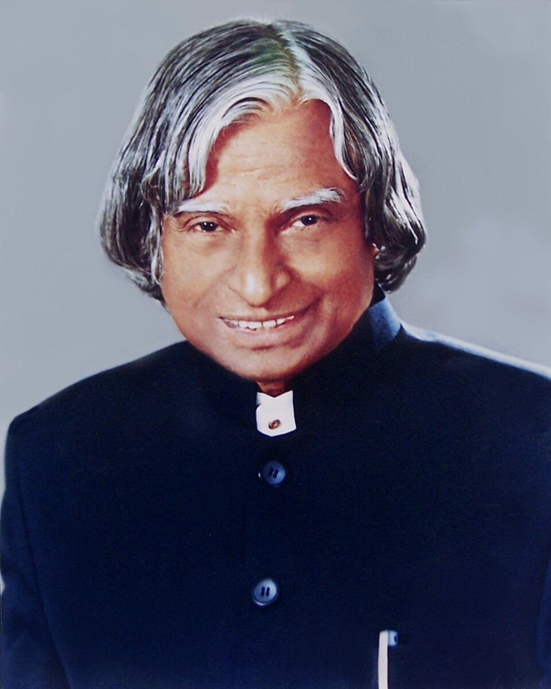

The Missile Man of India

Scientist. Teacher. Author. President. An inspiration to millions.
Dr. Avul Pakir Jainulabdeen Abdul Kalam was one of India's most respected scientists and public figures. He was born on 15 October 1931 in Rameswaram, Tamil Nadu. Coming from a modest background, he developed a strong interest in science and learning from a young age.
After studying aeronautical engineering at the Madras Institute of Technology, Kalam began his career as a scientist. He worked with the Defence Research and Development Organisation and later joined the Indian Space Research Organisation. His work contributed to India's space and missile development programmes.
Kalam played an important role in the development of India's indigenous Satellite Launch Vehicle programme. He later led major missile development efforts involving systems such as Agni and Prithvi. Because of his contribution to India's missile programme, he became widely known as the "Missile Man of India".
In 2002, Kalam became the 11th President of India and served until 2007. Even after his presidency, he continued teaching, writing and interacting with students. His dedication to education and his encouragement of young people made him an enduring source of inspiration.
Born on 15 October 1931 in Rameswaram, Tamil Nadu.
Completed aeronautical engineering at the Madras Institute of Technology and began his scientific career.
Joined the Indian Space Research Organisation and became involved in India's space programme.
The SLV-3 successfully placed the Rohini satellite into near-Earth orbit.
Received the Bharat Ratna, India's highest civilian honour.
Became the 11th President of India and served until 2007.
Passed away on 27 July 2015 while delivering a lecture to students in Shillong.
"Dream, dream, dream. Dreams transform into thoughts and thoughts result in action."
— Dr. A. P. J. Abdul KalamDr. Kalam's life represents the connection between science, education and service. His journey from a small town in Tamil Nadu to the highest constitutional office in India showed the importance of knowledge, determination and continuous learning.
His books, lectures and interactions with students continue to encourage young people to think creatively and work towards meaningful goals. His contribution to science and his commitment to education remain an important part of his legacy.